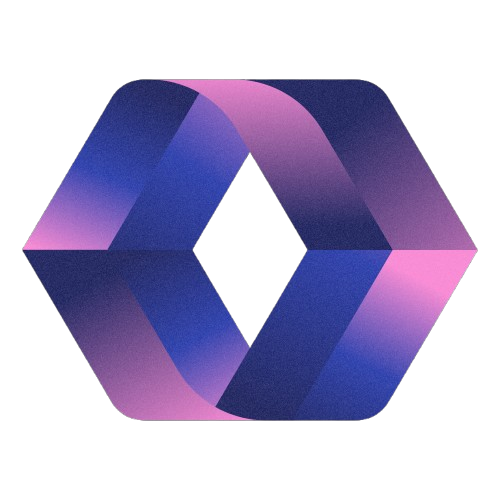

Loading...
Memangkas biaya operasional armada hingga 16,5% dan mengeliminasi risiko salah pilih lokasi bisnis tanpa spekulasi.
Analisis berbasis data riil untuk memastikan setiap keputusan operasional dan ekspansi Anda tepat sasaran.
Pemetaan Jangkauan Pembeli (5–10 Menit), Cek Aturan Tata Kota / Zonasi RDTR, dan Analisis Daya Beli Kawasan.
Konsultasi Ritel →Proteksi Rebutan Pembeli Antar-Cabang (Kanibalisasi Pasar), dan Analisis Radius Pengantaran Online (3-5 KM).
Konsultasi F&B →Analisis Sudut Pandang Pengendara 3D, Cek Halangan Pohon/Gedung, dan Hitung Estimasi Keramaian Lalu Lintas Harian.
Konsultasi OOH →Penentuan Jalur Bebas Tanjakan Ekstrem (Hemat Solar 16.5%), Alokasi Biaya Tol, Feri, dan SPBU Fleet Card.
Konsultasi Logistik →Lihat langsung bagaimana data elevasi dan rute logistik diproses melalui dashboard interaktif Bull.Geo (Studi Kasus: Koridor Jakarta-Bali).
Buka Live Interactive MapPilih paket audit berdasarkan sektor bisnis Anda. Semua output disampaikan dalam bahasa bisnis yang mudah dieksekusi.
Kirim titik lokasi atau masalah bisnis Anda via WhatsApp.
Pemrosesan data rute, zonasi, dan visibilitas di Google Colab.
Menerima Peta Interaktif & Laporan Eksekutif (Word/PDF).
Diskusi langsung untuk pengambilan keputusan bisnis yang tepat.